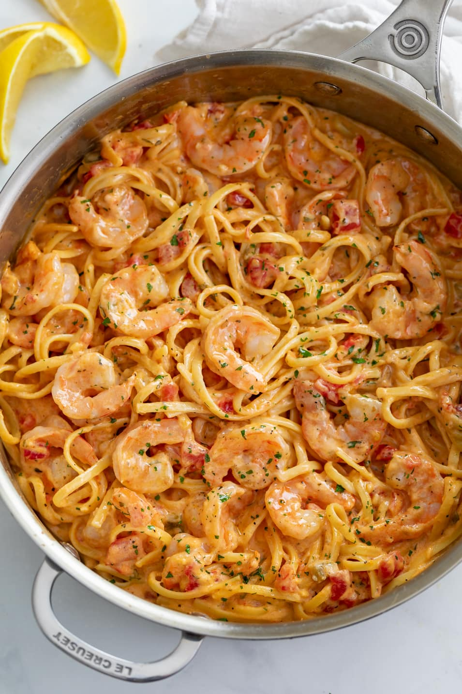

Pasta

Description
This classic shrimp pasta recipe was inspired by many "easy pasta recipe" videos
I followed when I was a college student living off campus. Although these recipes
were simple, it was a struggle finding a recipe that included all the ingredients
I had in my bare-bones apartment... So I tweaked many recipes with my own simple
version that includes very typical ingredients every college student usually
has!
Ingredients
- Any kind of pasta
- Shrimp or any protein
- Bell peppers, or any veggies!
- Fresh garlic and onion is optional... But powder or none is ok!
- Heavy cream or milk
- Parmesean cheese, real grated or powdered, or none!
- Butter or oil
- Any seasonsings, such as salt, pepper, paprika, creole, cajun, etc.
By now you can see what I mean by very simple... There are no measureaments
as you can add as much or as little of whatever you have. As a college student, having
an easy recipe that you can adjust depending on your current ingredients while
also having a delicious nutritious meal is very important. Of course, the more
fancy ingredients you have, the better tasting, but with these simple ingredients
your pasta will still turn out deliciously wonderful.
Steps
- Bring a pot of water to a boil, add in a handfull of salt and add your pasta.
Cook according to the instructions.
- In another pan, melt your butter or oil and add in your shrimp or
protien and season with desired seasonings.
- Cook until 2/3 done, or well done according to preference, and set aside.
It will be cooked more when added back to the pan with the pasta.
- Add in your veggies, which tend to cook longer than the shrimp. Add
simple seasoning such as salt and when it is almost done cooking, add in your
shrimp. Lower the heat and monitor until cooking is done.
- When noodles are done cooking, drain and put aside to add to the pan later.
- In the pan, add desired amount of heavy cream which will determine how saucy you
want your pasta. If adding parmesean, add now and stir. Mix in additional
seasonings according to taste.
- Add in pasta noodles and mix thoroughly, keeping in mind that letting the pasta
sit will allow the sauce to thicken and stick to the noodles. Taste and add more
seasoning, parmesean, or any other ingredient accordingly.
- Let cool and for sauce to thicken up, then serve!